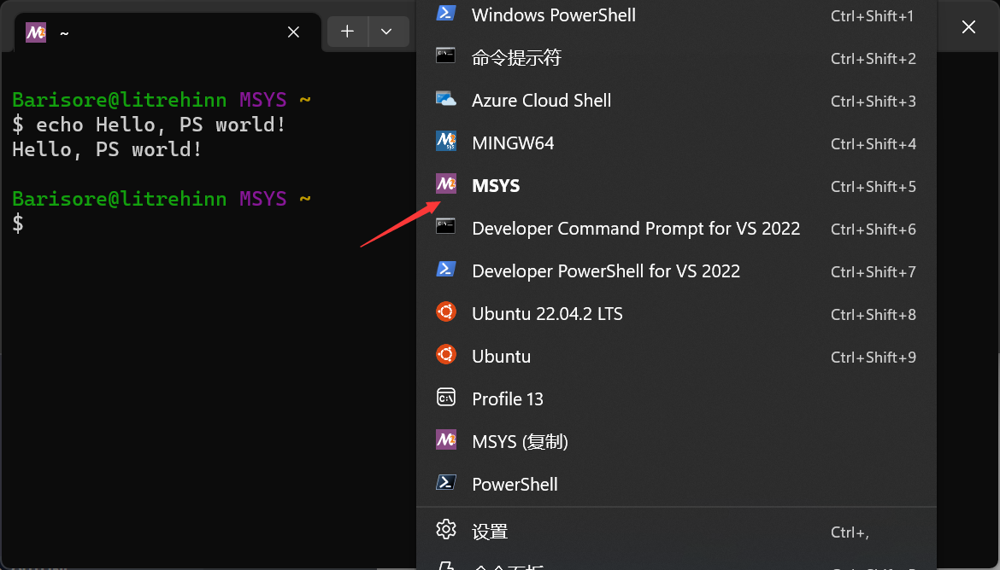

快速上手¶
以下将简要介绍问题求解编程实验的上手流程。
Unix Shell 环境
从 2023 级开始，问题求解编程部分的实验要求在 Unix Shell 环境下完成。这是为了让大家在面对此后将修读的《计算机系统基础》《操作系统》等课程的实验时有一定的 Shell 使用基础，能够更好的生存下来。
Windows XP/Vista/7/8/8.1 用户请注意
微软已经终止了对 Windows XP/Vista/7/8/8.1 的支持，因此本讲义可能涉及的 Windows 系统的较新软件、特性可能在这些系统上不可用。
如果你正在使用这些版本的 Windows，请尝试升级至 Windows 10 或更新的 Windows 版本。如果你的电脑不支持新版 Windows，请尝试（但不限于）用其他方式配置所需环境，更换更新的电脑，安装 Linux 发行版，手动安装 Windows 功能，使用虚拟机运行新版 Windows 等方法。
如果你正在使用更老的 Windows 版本作为工作环境，请务必更换操作系统或设备。
MacOS 用户请注意
笔者从未使用过 MacOS，所以并不了解 MacOS 如何配置必须的环境，请自行阅读相关教程。
另外针对 MacOS 用户需要提醒的是，若你未来计划修读课程《数字逻辑与计算机组成实验》，则可能需要准备一台 Windows/Linux 备用机以安装所需的 Vivado 软件。
但后续课程实验将尽力提供对于 MacOS 环境的兼容性（会在 MacBook 上进行测试）。
阅读前声明
工欲善其事，必先利其器。环境配置并不是「装好软件」那么简单的事情，它本身就是一种「计算机工程」。因此就需要考虑各个工具之间的相合性，环境的维护难度，后续的拓展性等等。一个例子是 NixOS。
从广义上，环境是基础设施的一种，好的基础设施意味着高效率。PA 讲义中仔细阐述了这一点。
因此，在介绍配置环境的过程中我们会不断介绍一些工具或环境的背景知识，告诉你我们选择它而不是其他工具的考量，为你提供多种选择，希望为你带来一些启发。并希望你能了解「环境是怎么配置起来的」而不是仅仅 follow the step one by one。
但是我们很清楚，修读《问题求解》课程的学生群体是多样化的。如果你完全不懂计算机，那么本文也提供了配置好环境的保姆级教程。如果对文中的部分背景知识感到十分困惑，大可以跳过。同时，如果你对文中一些过于基础的补充框感到厌烦，也可以跳过它们。
当然，笔者不是什么专家抑或极客，也是百度上东搜一个软件西查一个软件过来的，你可以批判看待我的经验之谈。
环境配置¶
MSYS2 简介¶
一言
All problems in computer science can be solved by another level of indirection.
（计算机科学领域的所有问题都可以通过增加一个中间层解决）
MSYS2 基于 Cygwin，Cygwin 最早是一套使用 GCC 交叉编译出符合 Windows 可执行文件格式的程序的工具链（使用和 Linux 平台同一份或者经过少许修改的 C 源码）。同时，为了使用起来更为方便，Cygwin 同时移植了 Unix Shell 环境和大量的 Unix 命令行工具。Shell 环境和许多命令行工具需要 Linux 系统调用（如 fork() 等），因此 Cygwin 还开发了把 Linux 系统调用「翻译」为 Windows 系统调用的兼容层。
MSYS2 区别于 Cygwin 的地方是它更重视 MINGW (Minimalist GNU for Windows)，这是一套返璞归真的工具链。说它返璞归真，是因为它试图完全不依赖额外的兼容层，直接由 GCC 生成 Windows 目标平台的可执行文件（当然，它只能通过 windows.h 调用 WIN32 API）。
MSYS2 重写了 MSYS，而后者最初就是为了为使用 Mingw 提供一个 Unix 环境和与之匹配的工具箱。当然，这实际上就是 Cygwin 所做的事情，因此 MSYS2 继承了这一部分。不过二者的目的不同：MSYS 除了基础环境外，主要使用和生成不依赖 Cygwin 兼容层的 Mingw 的二进制包。
如果你用过 Git for Windows，那么你可能就见过 MSYS2 环境，因为它的类 bash 环境就是用 MSYS2 实现的。
注意：MSYS2 不是虚拟机，它没有自己的内核。
安装 MSYS2¶
Linux 用户请注意
若你使用 Linux 发行版，则不需要安装 MSYS2。
为什么不使用自带的命令行工具 cmd 或 powershell？
因为这些命令行工具承自 MS-DOS，具有不同于 Unix Shell 的语法和各种实用程序。你们此后的大部分课程实验都将是在 Linux 环境下进行的，因此使用 Unix Shell 可以更好地为你们将来的课程打下基础。
为什么使用 MSYS2 而非 WSL 等？
MSYS2 在 Windows 原生地（而非使用虚拟机）提供了一个 Unix Shell 环境，原生就是一种好处。
这意味着你在 Windows 可以无障碍的使用 MSYS2 提供的大量工具以及可以通过包管理器从仓库安装的大量实用软件和库，如 ffmpeg, tex live, qt, verilator 等等。反过来，你在 MSYS2 环境中也同样可以使用 Windows 命令行工具，这提供了不小的便利。
使用 WSL 也不失为一种好选择，但这样我们就将你视作 Linux 用户。
将 MSYS2 的程序目录配置到环境变量¶
使用 Windows 10 或更新的操作系统
Windows 10 的搜索功能可以极大的减轻你的思维和操作负担。
如果你还在因为各种原因用更老的操作系统，那么是时候升级了——世道必进，后胜于今。
使用 Win+S 唤出搜索菜单，键入环境变量一词，选择第一个候选项。在新出现的页面中，在 PATH 中添加 $MSYS2_PATH\usr\bin 和 $MSYS2_PATH\mingw64\bin，这样就可以在 MSYS2 环境以外使用 MSYS2 环境中的工具了。
替换 $MSYS2_PATH
这是一个变量，代指你 MSYS2 安装的路径。这个变量仅在文档中存在，你应该把它替换为你的 MSYS2 安装路径。
计算机领域的文档经常出现这样的表达，使用变量的原因是每个人具体的配置不同。
什么是 PATH 环境变量？
环境变量是指在程序运行时存在的一些「背景信息」。
PATH 告诉 Shell 程序所需的二进制文件可能出现的位置。
为什么有两个二进制目录？
$MSYS2_PATH\usr\bin 是那些 Cygwin 环境才可以运行的（使用 Unix 系统调用）的软件包的安装处，$MSYS2_PATH\mingw64\bin 是 mingw 构建的软件包的安装处。
我设置了环境变量，但是变化没有生效啊？
请确认你是否保存了所有修改并退出了所有菜单，并重启所有的终端。
环境变量是在程序加载启动时赋予的，修改环境变量不会影响正在运行的程序。
将 MSYS2 配置到 Windows 终端¶
Windows 终端是微软推出的全新一代、功能更加完善的终端。
我们假定所有使用 Windows 平台的读者都已经安装了 Windows 终端。
可以不用 Windows 终端吗？
可以。但是它默认支持虚拟终端控制序列（即 ANSI 转义序列），这对于我们的项目进行是必需的。如果你可以自行配置使得 Conhost 也支持 ANSI 转义序列，那么也可以。
终端和 Shell 有什么区别？
终端和 Shell 是两个往往相伴出现而实际上不同的概念。简言之，终端是帮助我们与 Shell 交互的可视化应用程序，Shell 则是系统对外提供的外壳/接口。使用更好的终端可以极大地提升我们在 Shell 环境内操作的体验。
欲了解更多背景知识，请访问这个帖子。
打开 Windows 终端，在标签页下拉菜单中选择设置，点击添加新配置文件。
在名称中输入 MSYS2，在命令行一栏中输入：
$MSYS2_PATH\msys2_shell.cmd -defterm -no-start -use-full-path -here -msys2
并在图标一栏中选择：
$MSYS2_PATH\msys2.ico
然后在选项卡标题中输入 MSYS2，保存配置文件即可。
其他选项可以按需设置，也可将 MSYS2 设定为 Windows 终端的默认配置。
如果你配置成功了，你将可以在 Windows 终端上的下拉菜单中看到 MSYS2 的选项：

我们十分建议你将 MSYS2 在「设置-启动」中设置为默认配置文件，并建议你在非集成环境下均使用 Windows 终端进入 MSYS2 Shell 环境。
-msys2 是什么意思，还可以启动其它环境吗？
如果你改为 -mingw64，那么该命令将启动 MINGW64 环境，它和默认的 MSYS2 环境没有大的区别，但是它更优先启动 /mingw64/bin/ 下的程序。
想知道这是怎么做到的？在两个环境分别执行 echo $PATH 试试。
将 MSYS2 配置到 VSCode 终端¶
VSCode 是目前一款十分流行的编辑器。从这里下载 VSCode。
（不要从国内某些奇怪的收费源处安装啊 kora）
VSCode 作为 GUI 应用，其使用是相当容易学会的，有不解之处可以查看官方文档。
（编辑器，那不就是记事本吗？）
按 Ctrl+` 或者用鼠标唤出终端，我们发现其中并没有 MSYS2 的 Shell 可供选择。
于是我们需要用 VSCode 的配置功能添加新的 MSYS2 环境。
按 Ctrl + Shift + P 打开控制面板，输入 Preferences: Open User Settings (JSON)，回车。
在出现的文件中加上这样一段：
"terminal.integrated.profiles.windows": {
"PowerShell": {
"source": "PowerShell",
"icon": "terminal-powershell"
},
"Command Prompt": {
"path": [
"${env:windir}\\Sysnative\\cmd.exe",
"${env:windir}\\System32\\cmd.exe"
],
"args": [],
"icon": "terminal-cmd"
},
"msys2-msys2": {
"path": "$MSYS2_PATH\\msys2_shell.cmd",
"args": [
"-defterm",
"-use-full-path",
"-msys2",
"-no-start",
"-here"
]
},
}
注意上面的 MSYS_PATH 替换时路径要使用双反斜杠。
在你配置成功后，你同样可以在 VSCode 集成终端中类似 Windows 终端的下拉菜单找到 MSYS2 Shell 环境，我们同样建议你将其设为默认。
为 settings.json 添加属性
上面要求你添加的内容其实是 JSON 配置「顶级对象」的一个属性（即 "something": {...}）。
如果你的 JSON 里没有任何内容，你应该在上述内容的外层再添加一对大括号表示「顶级」对象。
如果你的 JSON 里已经存在有内容，那么最外层的大括号就是「顶级对象」，请你在它内部的最后一个属性结束处加上一个英文逗号（如果原来没有的话），并在其后加上上面的这段。
为什么要用双反斜杠？
Windows 默认的路径符号是反斜杠，但在 JSON 字符串里，这是特殊字符（转义字符），需要再用一个反斜杠转义后才是「真正」的反斜杠。
什么是 JSON？
JSON 是一种描述结构化的数据的方式，是结构化数据序列化的产物。VSCode 使用 JSON 来配置自身设置和拓展，从而提供了对人类和对程序都相对友好的统一接口。
我们可以看到上面的一段 JSON 描述了 VSCode 集成终端可以启动的三种 Shell 环境的具体信息，如启动路径，启动参数，图标等。由于启动方式有多种，部分参数是可选的。
我们在项目中也会接触到 JSON 格式，所以可以现在查看此处获取有关于 JSON 的更多信息。
用 pacman 安装工具¶
我们接下来安装一些完成课程实验必要的工具：
在 MSYS2 环境中运行：
pacman -S mingw-w64-x86_64-toolchain make git vim man
以上命令将为你安装 mingw-w64 工具链、自动化构建工具 GNU make、版本控制系统 git、编辑器 Vim、以及文档查询工具 man。
如果在安装过程中报错了，请检查你的网络环境。如果你确信你的网络环境没有问题，可以使用南大镜像源。
还是报错怎么办？
见学会解决问题一节。
要检查 mingw-w64 工具链是否安装成功，可以执行以下命令：
g++ --version
对于其他工具同理。
Linux 用户请注意
如果你使用 Linux 发行版，请使用该发行版自带的包管理器安装这些软件，注意 mingw 工具链需要换成 g++ 和 binutils。
什么是 pacman/包管理器？
pacman 是 MSYS2 内建的包管理器。包管理器的作用类似于「应用商店」，负责处理各种软件（只要官方仓库里有）的安装、卸载、升级、依赖关系处理等。在安装时需要确保和软件源网络畅通，上面已经提供了将软件源更换为南大源的方法（你显然更易访问到它）。
什么是 Vim？
Vim 是一个命令行文件编辑器。它可以完全不依赖鼠标和 GUI 而运作，仅靠键盘快捷键实现光标跳转、模式切换、复制粘贴、查找替换等功能。同时，受益于 Vim 内建的 Vimscript 为交互语言的接口，用户可通过 .vimrc 为 Vim 配置自定义配置和功能强大的插件。
Neovim 是 Vim 的一个重构版本，致力于成为 Vim 的超集，它完全兼容 Vim 的各种配置，并可以使用 Lua 这种通用程序设计语言进行配置调整和插件开发。
为什么有的软件包名字前面有一大串前缀，有的没有？
有 mingw 前缀的是使用 mingw 构建的软件包，没有的则是 cygwin 环境下才可以运行的软件包。
上手实验¶
编译和运行程序¶
接下来我们来学习如何使用 Unix shell 环境编译和运行程序。顺便借机熟悉一下 Unix shell 以及其包含的若干命令行工具的使用。
在 Windows 终端中打开 MSYS2 Shell，输入 cd ~ 将目录切换至自己的家目录。
这是在干什么？
当你打开 shell 时，它总在文件系统的某个特定目录工作，使用 pwd 即可看到自己所在的目录，~ 是家目录的缩写，你的家目录一般是 /home/$Username，使用 realpath ~ 以得到家目录的真实路径名。
上文要求你输入的命令即是将你当前的工作目录切换至你的家目录，以便于后续新建程序。
如何获取帮助？
讲义不可能事无巨细地讲述每个命令，因此获取离线或联机帮助是必须的。在遇到不懂的命令时，你当然可以求助于搜索引擎以获取有关于该命令的信息。不过，使用 Shell 内建的 help 或 man 命令可以帮助你得到命令的信息。
试试键入 help cd 或 man pwd。
如果你使用 Linux 发行版，可以试试安装 tldr 来获取更加简单的提示。
如果你可以访问大语言模型聊天机器人，那么也可以试试向它提问。
输入 vim hello.cpp，进入 Vim 编辑页面。
在进入 Vim 之前
你可能会问：等等，我还不会使用 Vim 呢！
在使用上述命令之前，试试在终端中键入 vimtutor，在接下来出现的界面中你将学会 vim 的基本操作。
注意：不必将教程进行到最后，学习到能编辑并保存一个文件即可。
在 vim 界面中按下 i 进入编辑模式并键入一段代码：
#include <cstdio>
int main() {
puts("Hello, Problem Solving!");
return 0;
}
点击 Esc，输入 :wq 保存文件并退出。
你是否跳过了学习 Vim 的使用？
如果你没有去学习 Vim 的基本操作而直接按照讲义给的详细操作说明完成了刚刚的步骤，那么值得提醒的是：提供如此详细的操作说明并不是讲义的义务。在你们未来可能修读的《计算机系统基础》的课程中，遑论如此基础直接的操作，就算是一个实验任务，你所能得到的也只是几句模棱两可的指导。
我翻遍整个实验讲义一查，这讲义没有操作说明，歪歪斜斜的每页上都写着「STFW、RTFM、RTFSC」几个缩写。我横竖睡不着，仔细看了半夜，才从字缝里看出字来，满本都写着一句话「别像弱智一样提问」！
接下来再输入：g++ hello.cpp -o hello; ./hello。
如果一切顺利，屏幕上将出现 Hello, Problem Solving!。
恭喜你，第一次通过命令行编译并运行了一段 C++ 程序！ （但我相信你们很多人早就不是第一次了）
进一步学习 GCC 的使用
刚刚编译程序使用的是 GNU Compiler Collection (GCC) 套件的一部分（如果你使用的是 MSYS2 环境，那么你使用的是 GCC 的 mingw-w64 版本）。
g++ 是 GCC 中的一个强大的 C++ 编译器。若想获取更多 g++ 的使用方法，试试键入 man g++。
我觉得 Vim 太陈旧了。可以用现代的编辑器吗？
事实上，使用 VSCode 代替 Vim 作为编辑器，并使用 VSCode 的内建终端也可以完成上述操作。
至于使用 VSCode 还是 Vim 作为你们的日常编辑环境，这就见仁见智了。大家可以自行选择。
但我们不推荐使用过于傻瓜式的插件（如 Code Runner），至少你需要知道它的原理之后再使用。
另外，Vim 并不陈旧。在各种插件加持下，它往往还能超过现代编辑器的使用体验，但它的学习成本确实很高。
进一步学习 Unix Shell 的使用
本版所描述的只是最简略的上手指南，如果想真正入门 Unix Shell 的使用，可以学习以下两个教程。
你不必学完教程的全部部分，有时只需学完教程的开始一小节就可以胜任实验所要求的任务。如果你在教程中遇到了短时间内搞不明白且不影响实验进度的问题，记住「过犹不及」，也许现在并不是学习它们的时候。